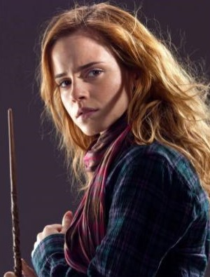
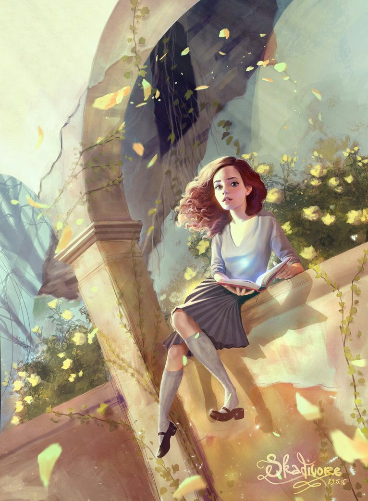
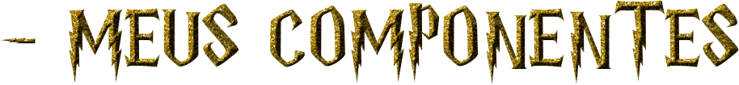
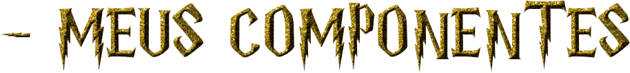
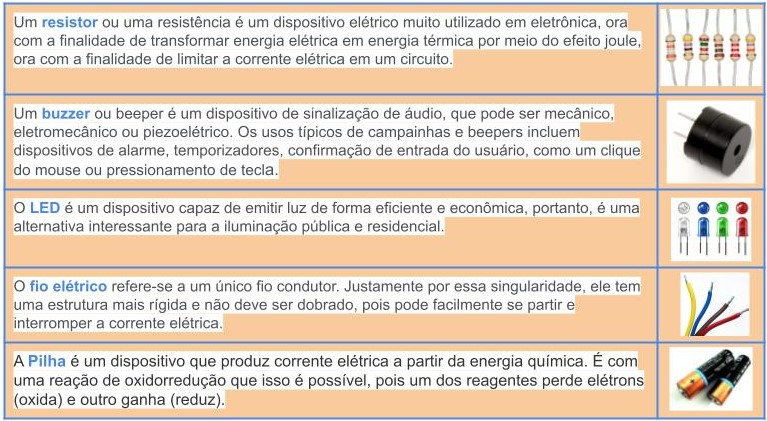
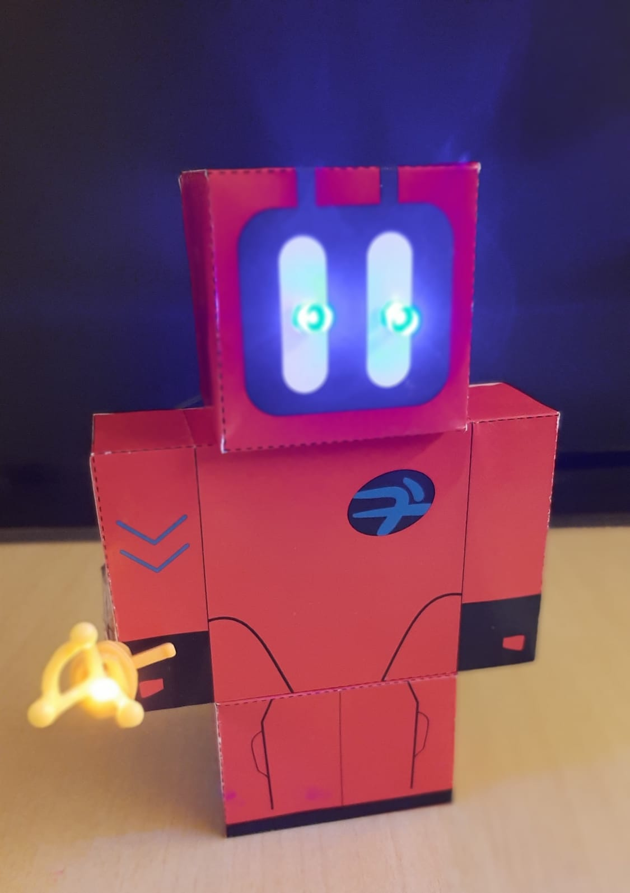
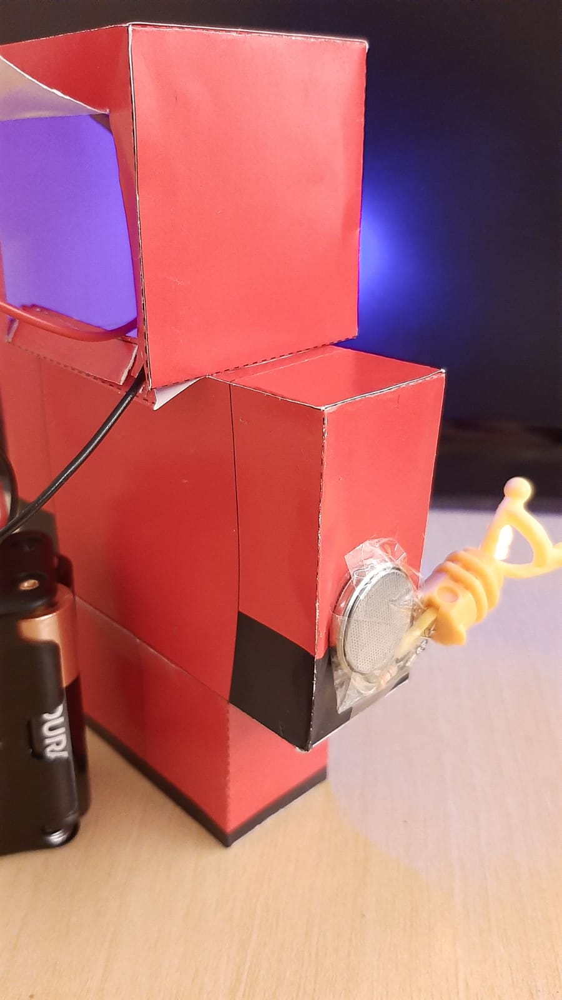
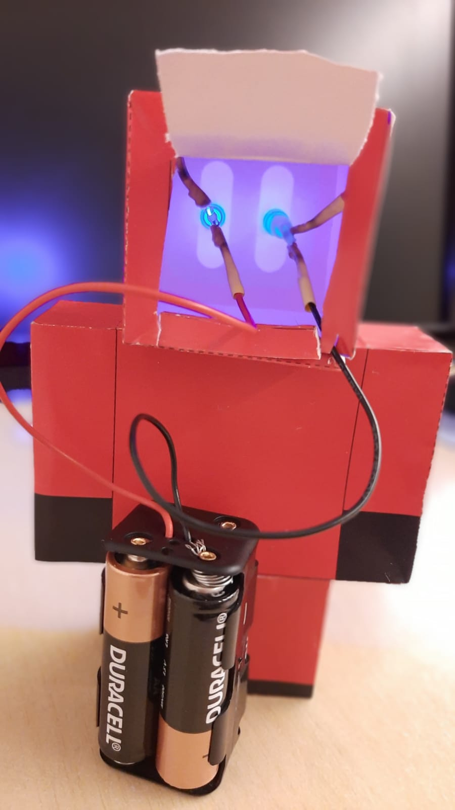

Eu e minha Escola
EMEB Professora Ermínia Paggi
Professora Silvia Helena Neves de Sousa

Meu avatar: Hermione Granger do filme Harry Potter
|  |  |
|---|
Sou PAPP TEC - Professora de Apoio aos Projetos Pedagógicos Tecnológicos e estou desde 2020 nesta EMEB.
Minha história com a Tecnologia...
...começou em 1987, quando iniciei o curso de PROCESSAMENTO DE DADOS e comecei a trabalhar no banco. Tudo me encantava no curso, principalmente as aulas de lógica de programação, com seus fluxogramas e desafios incríveis que a professora propunha; já as aulas de BASIC e COBOL pareciam linguagens de outro mundo... foi então que entendi que a partir daí tudo seria diferente. Agradeço ao professor Agnaldo Arroio, coordenador do curso de pós-graduação "Ciências da Natureza e suas Tecnologias", oferecido pela Prefeitura de São Bernardo do Campo, na USP, e também professor docente na disciplina "Comunicação audiovisual", que fez a MÀGICA acontecer: mostrando a importância da tecnologia nas nossas aulas, e como é legal ensinar e aprender assim!
Este é o Logo da nossa escola:
Conheça nossa escola:
Clique para acessar o álbum no Google fotos: Espaço Escolar - EMEB Profª Ermínia Paggi
Veja também o nosso blog: BLOG EMEB PROFª ERMÍNIA PAGGI
Alunos em atividades:
Clique para acessar o álbum no Google fotos: Alunos em atividades no LAB e MAKER
Componentes Eletrônicos do 1º projeto de robótica:
 


Nosso primeiro protótipo: Erminia 1.0
"LEDs e BUZZER"
|  |  |  |
|---|
Programação realizada no Pandorabots: